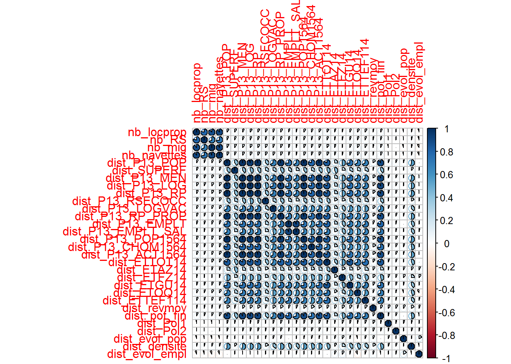
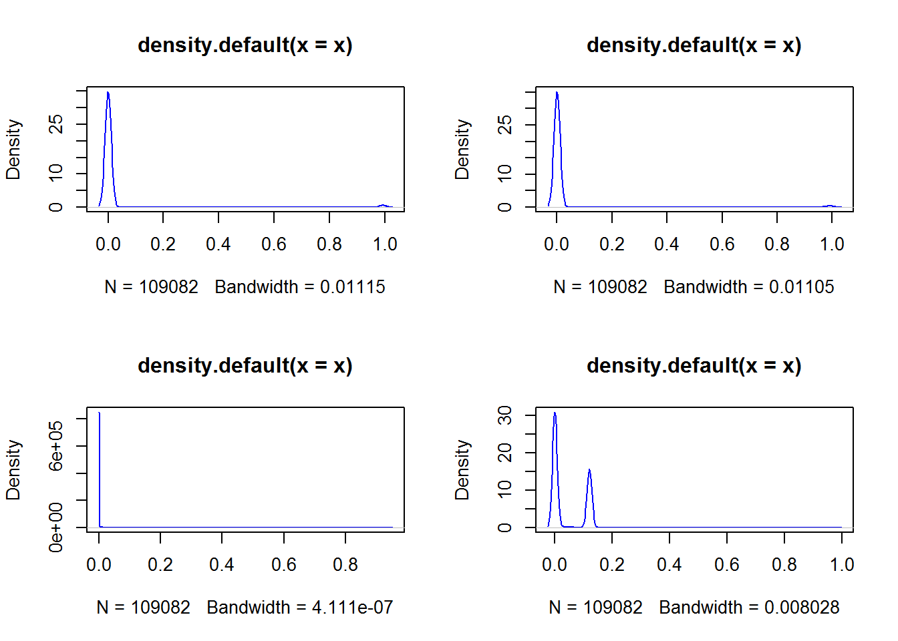

Chapitre 4 Modélisation de la probabilité de fusionner
Après nettoyage et sélection des features, la base de données pour exécuter le machine learning est donc constituée de 109082 observations et de 38 variables explicatives.
## [1] "dep" "ze" "bv"
## [4] "au" "epci2014" "epci2016"
## [7] "scot" "plui" "dist_P13_POP"
## [10] "dist_SUPERF" "dist_P13_MEN" "dist_P13_LOG"
## [13] "dist_P13_RP" "dist_P13_RSECOCC" "dist_P13_LOGVAC"
## [16] "dist_P13_RP_PROP" "dist_P13_EMPLT" "dist_P13_EMPLT_SAL"
## [19] "dist_P13_POP1564" "dist_P13_CHOM1564" "dist_P13_ACT1564"
## [22] "dist_ETTOT14" "dist_ETAZ14" "dist_ETFZ14"
## [25] "dist_ETGU14" "dist_ETOQ14" "dist_ETTEF114"
## [28] "dist_revmoy" "dist_pot_fin" "dist_Pol1"
## [31] "dist_Pol2" "dist_evol_pop" "dist_densite"
## [34] "dist_evol_empl" "nb_locprop" "nb_RS"
## [37] "nb_mig" "nb_navettes"On découpe cette base en 12 blocs de lignes qui vont permettre de réaliser la validation croisée. On a également implémenté une fonction qui permet d’entrainer puis de tester les modèles suivants :
- régression logistique
- régression logistique avec choix de variables par AIC (step)
- régressions pénalisées (lasso, ridge, elasticnet)
- arbre de décision
- boosting (adaboost)
- forêt aléatoire
- SVM (mais n’ont pas abouti)
- Réseaux de neurones
- 3 couches connectées de façon complète avec respectivement 10, 20 et 10 neurones
- 4 couches connectées de façon complète avec respectivement 1024, 640, 120 et 12 neurones
La fonction est appelée dans une boucle foreach qui permet de paraléliser les traitements pour chaque bloc. On a ainsi pu diviser les temps de calcul par 3 (pour les modèles entrainés sur nos postes) ou par 7 (pour les modèles entraînés sur un serveur). Le résultat de cette boucle est un dataframe contenant les prévisions (probabilités) faites par les différents modèles sur les blocs de tests.
Les résultats sont présentés dans l’application shiny dédiée au projet (courbes ROC, indicateur AUC et matrices de confusion).
Globalement, on constate que les modèles à base d’arbres de décisions donnent de meilleurs résultat : il semble que le choix de fusionner soit déterministe, et guidé les proximités en termes de vote des habitants (vote modéré ou extrême). On peut penser que cette variable détermine également les habitudes collaboratives des communes, c’est à dire leur appartenance à une même structure intercommunale (EPCI, SCOT), et que les communes ayant des électorats proches peuvent plus facilement se regrouper dans le cadre d’un projet commun.

## $ARBRE
##
## Call:
## roc.default(response = prev$Y, predictor = x)
##
## Data: x in 107308 controls (prev$Y 0) < 1774 cases (prev$Y 1).
## Area under the curve: 0.9999
##
## $FORET
##
## Call:
## roc.default(response = prev$Y, predictor = x)
##
## Data: x in 107308 controls (prev$Y 0) < 1774 cases (prev$Y 1).
## Area under the curve: 0.9999
##
## $DNN1
##
## Call:
## roc.default(response = prev$Y, predictor = x)
##
## Data: x in 107308 controls (prev$Y 0) < 1774 cases (prev$Y 1).
## Area under the curve: 0.992
##
## $DNN2
##
## Call:
## roc.default(response = prev$Y, predictor = x)
##
## Data: x in 107308 controls (prev$Y 0) < 1774 cases (prev$Y 1).
## Area under the curve: 0.9008
## $ARBRE
## NULL
##
## $FORET
## NULL
##
## $DNN1
## NULL
##
## $DNN2
## NULL## $Y
## [1] 1774
##
## $ARBRE
## [1] 1789
##
## $FORET
## [1] 1788
##
## $DNN1
## [1] 931
##
## $DNN2
## [1] 1043L’arbre de décision seul produisant déjà des résultats très satisfaisants, les forêts aléatoires et adaboost l’améliorent, mais légèrement. Les autres méthodes sont moins performantes. La régression par exemple, ne met autant en avant le pouvoir discriminant de la proximité politique
##
## Call:
## glm(formula = y ~ ., family = binomial, data = baseML)
##
## Deviance Residuals:
## Min 1Q Median 3Q Max
## -4.0191 0.0000 0.0000 0.0000 0.7418
##
## Coefficients: (1 not defined because of singularities)
## Estimate Std. Error z value Pr(>|z|)
## (Intercept) 1.184e+01 4.877e+02 0.024 0.9806
## dep1 1.457e+00 1.602e+03 0.001 0.9993
## ze1 1.705e+01 1.515e+03 0.011 0.9910
## bv1 4.872e+00 1.923e+02 0.025 0.9798
## au1 -1.450e+00 7.374e-01 -1.967 0.0492 *
## epci20141 -9.486e+00 8.016e+01 -0.118 0.9058
## epci20161 -1.151e+01 8.198e+01 -0.140 0.8883
## scot1 -7.740e+00 1.682e+01 -0.460 0.6454
## plui1 1.334e+00 7.452e-01 1.790 0.0735 .
## dist_P13_POP -6.684e+00 1.140e+01 -0.586 0.5575
## dist_SUPERF -4.564e+00 1.980e+00 -2.305 0.0212 *
## dist_P13_MEN -1.258e+01 1.105e+01 -1.139 0.2547
## dist_P13_LOG 1.251e+01 6.525e+00 1.917 0.0553 .
## dist_P13_RP NA NA NA NA
## dist_P13_RSECOCC -6.543e-01 1.250e+00 -0.523 0.6007
## dist_P13_LOGVAC -2.153e+00 1.451e+00 -1.484 0.1379
## dist_P13_RP_PROP 1.141e+01 6.553e+00 1.742 0.0816 .
## dist_P13_EMPLT -1.965e+00 3.953e+00 -0.497 0.6190
## dist_P13_EMPLT_SAL 1.088e+00 3.395e+00 0.321 0.7486
## dist_P13_POP1564 -2.263e+01 1.330e+01 -1.701 0.0889 .
## dist_P13_CHOM1564 -2.185e+00 1.913e+00 -1.142 0.2533
## dist_P13_ACT1564 1.891e+01 1.060e+01 1.784 0.0744 .
## dist_ETTOT14 2.597e+00 3.689e+00 0.704 0.4814
## dist_ETAZ14 8.393e-01 1.360e+00 0.617 0.5371
## dist_ETFZ14 -1.533e+00 1.175e+00 -1.305 0.1920
## dist_ETGU14 5.594e-01 2.023e+00 0.276 0.7822
## dist_ETOQ14 1.419e+00 1.540e+00 0.922 0.3567
## dist_ETTEF114 -9.311e-01 1.634e+00 -0.570 0.5689
## dist_revmoy 2.917e+00 7.553e+00 0.386 0.6994
## dist_pot_fin 2.720e+00 4.750e+00 0.573 0.5669
## dist_Pol1 -5.324e+03 7.187e+03 -0.741 0.4588
## dist_Pol2 -3.438e+03 5.901e+03 -0.583 0.5601
## dist_evol_pop 2.786e+00 7.255e+00 0.384 0.7009
## dist_densite 1.519e+00 1.628e+00 0.933 0.3508
## dist_evol_empl 3.608e+00 3.031e+00 1.190 0.2340
## nb_locprop -3.050e-02 8.604e-02 -0.354 0.7230
## nb_RS 4.327e-01 5.531e-01 0.782 0.4340
## nb_mig -2.062e-02 4.254e-02 -0.485 0.6279
## nb_navettes 1.252e-02 1.878e-02 0.667 0.5050
## ---
## Signif. codes: 0 '***' 0.001 '**' 0.01 '*' 0.05 '.' 0.1 ' ' 1
##
## (Dispersion parameter for binomial family taken to be 1)
##
## Null deviance: 18132.72 on 109081 degrees of freedom
## Residual deviance: 122.83 on 109044 degrees of freedom
## AIC: 198.83
##
## Number of Fisher Scoring iterations: 25